地政学
ポートビラはバヌアツの首都で、メラネシア、豪州、ニューカレドニア、ソロモン諸島を結ぶ南太平洋の小さな節点です。港、空港、援助機関、外交、公海の資源管理が重なり、島国の交渉力を支える場でもあります。要衝です。
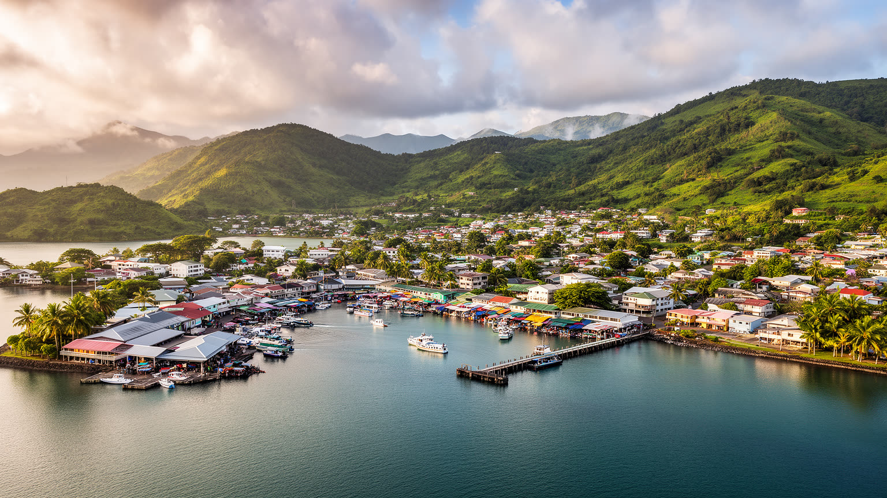
🇻🇺 バヌアツ / シェファ州 / World City Atlas
メレ湾の入り江に開いたバヌアツの首都です。天然港、国会、中央市場、観光桟橋、周辺村落、教会、カストム、防災、離島物流が近い距離で重なる南太平洋の都市です。
都市の骨格
ポートビラはエファテ島南西岸の湾に沿って伸びる。国会、官庁、港、空港、市場、観光桟橋が集まり、外洋と離島、村落と首都を結びます。
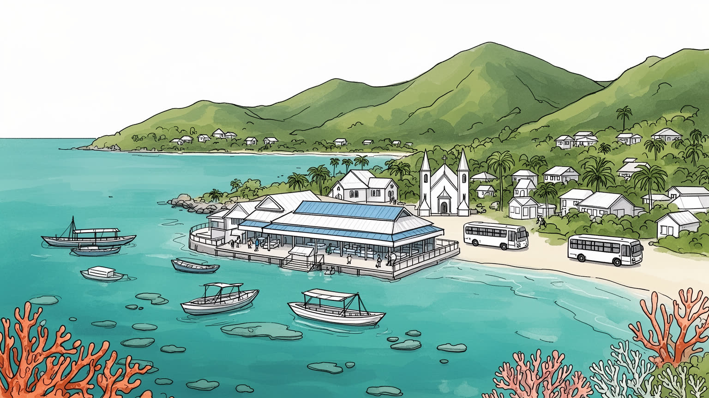
ポートビラはバヌアツの首都で、メラネシア、豪州、ニューカレドニア、ソロモン諸島を結ぶ南太平洋の小さな節点です。港、空港、援助機関、外交、公海の資源管理が重なり、島国の交渉力を支える場でもあります。要衝です。
行政、港湾、観光、建設、小売、市場、交通、教育、医療が雇用を作ります。クルーズや航空便の変動、サイクロン、地震、物価高は収入を揺らし、非公式な仕事と家族送金が都市生活を補う基盤となります。家計を支える街です。
英仏共同統治の記憶、ビスラマ、英語、仏語、教会、島ごとの言語、カストムが近いです。日曜礼拝、首長制、結婚や葬儀、市場の会話は、首都で暮らしても村の関係を保つ仕組みになる街です。毎週の営みでもある場所です。
旅行者は湾岸、リゾート、島巡り、滝、珊瑚礁を訪ねるが、住民は水道、道路、住宅、土地権、廃棄物、通勤、学校、医療と向き合います。観光の明るさと生活基盤を同時に読む街です。毎日の現実も映す暮らしの場所です。
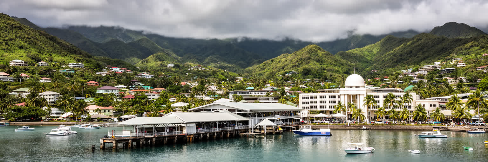
ポートビラの都市としての力は、メレ湾に守られた天然港と、そこへ集まる首都機能から生まれます。大きな高層街区ではなく、港湾、官庁、国会、裁判所、中央市場、金融機関、学校、病院、観光桟橋が、湾岸道路と丘の上の住宅地に沿って連なります。バヌアツは多くの島から成るため、首都は国内の端ではなく、外洋と離島をつなぐ窓口でなければなりません。船で届く燃料、建材、食料、輸入品、空港から入る旅行者、援助関係者、公務員、地方から来る学生が、市街地の小さな範囲で交差します。天然港の穏やかさは都市の魅力である一方、港への依存は災害時の弱点にもなります。岸壁や道路が傷めば、首都の行政だけでなく、離島へ送る物資や医療支援も滞ります。ポートビラを読むには、海辺の美しさと国家運営の実務を同じ地図で見る必要があります。湾岸の市場で野菜を買う人、港で荷役をする人、官庁へ書類を出す人、観光船へ乗る人は、異なる目的で同じ都市の骨格を使っています。小さな首都であるほど、一つの道路、一つの桟橋、一つの病院の意味は大きいです。さらに外務、税関、移民管理、災害対策本部が近接することで、港の動きは国家の意思決定と直結します。湾の浅瀬や丘の住宅地も、開発と保全の判断を日々迫ります。夜の停電や断水にも備えが要ります。港は風景ではなく、島国の行政と生活をつなぐ装置なのです。
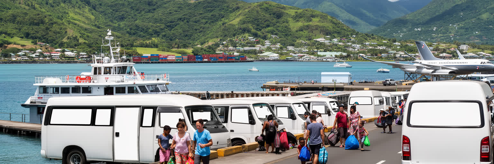
ポートビラの交通は、都市内の移動だけでは完結しません。バウアーフィールド国際空港は豪州、ニューカレドニア、フィジーなどとの空路を受け、国内線は離島の行政、医療、教育、商売を首都へ結びつけます。港では貨物船、島間フェリー、観光船、漁船が異なる時間で動き、市街地では番号のないミニバスやタクシーが市場、学校、病院、郊外集落を結びます。道路の舗装、排水、橋、港湾施設、燃料価格は、住民の通勤だけでなく、離島へ戻る家族、村から出荷される農産物、観光客の旅程を左右します。島国では距離は地図上の直線ではなく、船便の頻度、天候、運賃、荷物を積めるかどうかで決まります。ポートビラは便利な玄関であるほど、交通停止の影響も集中します。航空会社の運航不安やサイクロンによる欠航は、宿泊業と市場だけでなく、離島の患者や学生にも響きます。都市の小ささは移動の近さを生むが、首都と島々を結ぶ回路は細く、保守の手を抜けばすぐに脆くなります。ミニバスの柔軟な運行は公的交通を補う一方、渋滞、安全、料金、歩行者空間の課題も残します。歩道や停留場所が不足すれば、子どもや高齢者の移動は危険になり、雨季には短い距離も負担になります。港の倉庫や空港道路が詰まれば、市場の価格にも影響が出ます。港と空港と市場を結ぶ道は、観光の動線であると同時に、国の生活線そのものです。
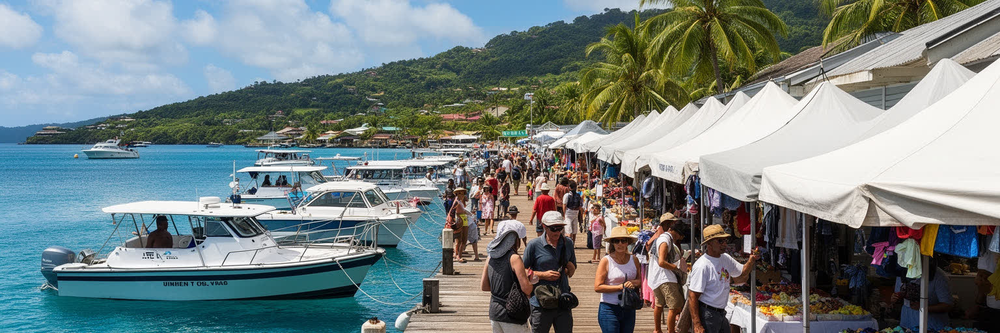
ポートビラは南太平洋の寄港地として、湾岸の市場、土産物店、レストラン、ダイビング、島巡り、滝やビーチへの日帰り旅行で知られます。旅行者にとっては短い滞在でも、都市にとって観光は外貨、雇用、交通、土地利用を動かす大きな産業です。クルーズ船が入れば、ガイド、運転手、店主、清掃、警備、港湾職員、食材供給が一斉に動きます。航空便で来る長期滞在者はホテルやリゾートを支えますが、便の欠航、運賃高騰、災害、感染症、為替で需要は大きく変わります。観光収入は首都の生活を支える一方、観光地化した海辺が住民の日常から離れたり、価格が旅行者向けに上がったりします。ポートビラの観光を読むには、青い海と笑顔の接客だけでなく、季節労働、家族経営、道路混雑、廃棄物、土地権、地域へ戻る収益を見なければなりません。文化体験や村訪問では、カストムを商品として見せることと、共同体が自分たちの価値を説明することの境界が問われます。よい観光は、旅行者を楽しませるだけでなく、働く人が無理なく続けられ、地域の海と土地が損なわれない仕組みを持ちます。短時間の寄港では消費が中心部に偏りやすく、村や離島へ利益が届く設計も問われます。港のにぎわいは、見えにくい準備と交渉の上に成り立っています。観光が戻る速度と生活が回復する速度は、必ずしも同じではありません。そこが難しいです。
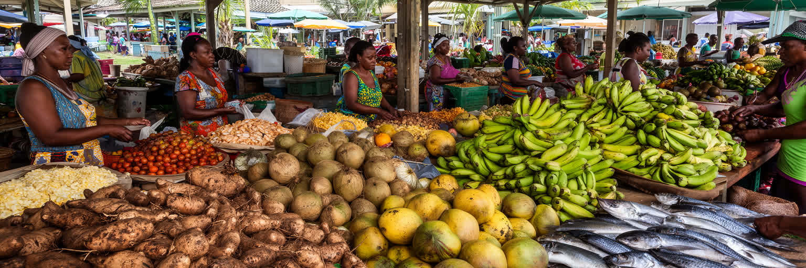
ポートビラ中央市場は、首都の日常を最も濃く見せる場所の一つです。エファテ島内の畑や周辺の村から、タロイモ、ヤム、キャッサバ、バナナ、ココナツ、葉物、果物、魚、花、手仕事の品が届き、女性たちの売り場、家族の手伝い、買い物客、旅行者が混じます。市場は食料を売るだけではなく、村の情報、親族関係、学校費、教会行事、葬儀や結婚の相談が行き交う社会の広場でもあります。輸入食品が増え、都市の食生活が変わっても、根菜や庭の作物は家計と文化を支えます。ですが市場の維持には、清潔な水、排水、日陰、保管、交通、廃棄物処理、衛生検査が必要で、気候変動やサイクロンは畑の収穫を直接揺らします。観光客が市場を歩く時、色鮮やかな売り場だけでなく、早朝から運び、並べ、売り、残品を持ち帰る労働を見ることが大切になります。現金収入の少ない世帯にとって、市場での小さな販売は学費や医療費を作る手段です。価格が上がれば都市の貧しい家庭ほど食事を削ることになります。市場の屋根や排水が整えば、売り手は雨季にも働きやすく、食品の傷みも減ります。観光客との接点も多く、値段や撮影の礼儀が信頼を左右します。市場は首都の胃袋であり、村と都市を結ぶ社会保障のような機能も持ちます。日々の会話も価値を持ちます。食の豊かさは、土地、水、交通、女性の労働に支えられている現場です。
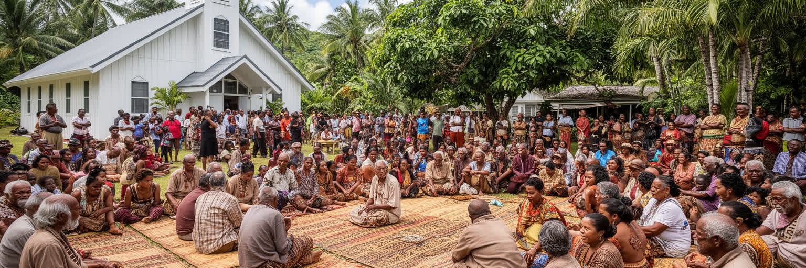
ポートビラでは、首都らしい行政や商業の時間の中に、カストムと教会の時間が深く残ります。バヌアツには多くの島と言語があり、都市には仕事や教育を求めて各地から人が集まります。そのため同じ地区に暮らしていても、出身島、親族、首長、教会、学校のつながりが複数重なり、困った時の助け合いや祝い事、葬儀、土地の相談に影響します。日曜の礼拝は生活の節目であり、長老や牧師、首長の言葉は政治や行政だけでは届かない規範を運びます。英仏共同統治の歴史は学校制度や言語に残り、ビスラマは異なる島の人々が首都で話す共通語になりました。カストムは観光向けの踊りや衣装だけではありません。土地の権利、婚姻、和解、賠償、共同体の責任を考える枠組みであり、都市開発や移住、住宅地の拡大にも関わります。ポートビラを近代的な首都としてだけ見ると、こうした社会の深い回路を見落とします。教会は祈りの場であると同時に、教育、女性会、青年活動、災害時の支援、移住者の相談窓口にもなります。都市の制度と村の秩序がぶつかる場面もありますが、両方を調整する力こそポートビラの社会的な厚みです。祝祭や和解の場では現金経済と贈与の作法が交わり、都市の若者も共同体への責任を学びます。宗教施設は災害時の集合場所にもなり、情報の伝達を助けます。首都で暮らすことは、村を捨てることではなく、村との距離を新しく組み直すことでもあります。
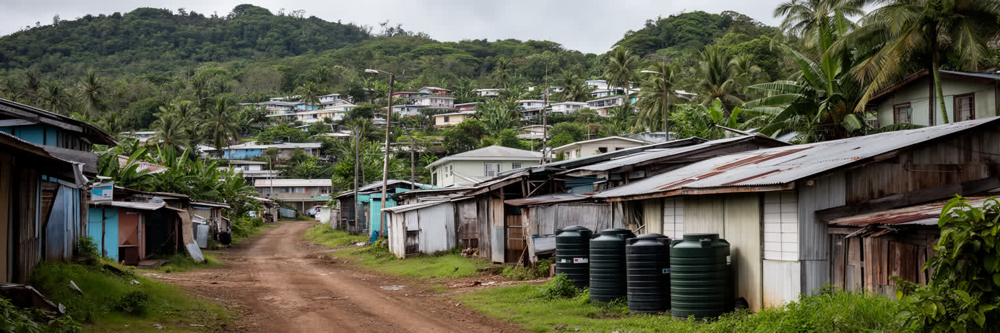
ポートビラの住宅問題は、人口規模だけでは測れません。市域は小さく、湾岸の商業地や官庁の周りには住宅、学校、教会、観光施設が密集し、郊外へ行くほど村落の土地、借地、非公式な居住地が入り組みます。バヌアツでは土地の多くが慣習的な権利と結びつくため、都市の拡大は単なる不動産開発ではなく、首長、家族、行政、借地人、投資家の交渉になります。仕事を求めて地方から来た人は、親族を頼って住み始めることも多いが、水道、排水、道路、廃棄物、学校までの距離は場所によって大きく違います。観光や外国人向け住宅の需要が高まると、海辺や丘の良い土地は価格が上がり、低所得世帯は災害に弱い場所へ押し出されやすいです。サイクロンや地震は、家の構造、屋根材、斜面、避難路の差を一気に見せます。住宅を考える時、建物の数だけでなく、土地の合意、公共サービス、通勤費、親族の支援、災害後の修理資金まで含めて見る必要があります。無計画に広がる地区では、ごみ収集や救急車の進入も難しくなります。借地契約の理解不足は、家族間の対立や退去不安にもつながります。ポートビラの都市成長は、首都としての機能を強める一方、村の土地制度と都市の現金経済をどう調整するかという難しい課題を突きつけます。住み続けられる街にするには、法制度だけでなく、地域の信頼を壊さない計画が欠かせないのです。
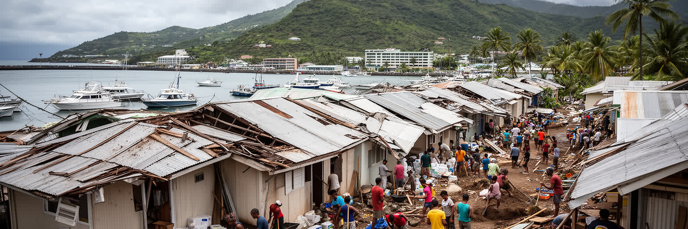
ポートビラは美しい湾に面していますが、自然災害のリスクを日常の条件として抱える都市でもあります。南太平洋のサイクロンは屋根、電線、港湾施設、道路、畑、観光施設に被害を与え、地震は斜面、埋立地、古い建物、通信、給水を揺らします。大きな災害の後、首都には国内外の支援、政府の調整、医療、避難所、物資輸送、被害調査が集中します。ですが首都自身が被災すれば、離島へ支援を送る力も弱くなります。災害復旧は一度の工事では終わらありません。家の修理費、学校の再開、観光予約の回復、市場の商品不足、道路の補修、心の不安が長く残ります。家族や教会、村のつながりは初動の助けになりますが、低所得世帯や移住者、障害のある人、高齢者へ支援が届く仕組みも必要です。ポートビラの防災を考える時、早期警報、避難路、耐風住宅、港湾の冗長性、空港の再開、備蓄、保険、多言語情報を一体で見なければなりません。学校や教会を避難拠点として使うには、平時から水、電源、衛生、名簿の準備が要ります。被害の記録を残すことも、次の建築基準や避難計画を強くします。訓練も大切です。災害が多い土地で暮らす強さは、危険を否定することではなく、何度も直し、学び、次の被害を小さくする制度を作ることにあります。観光客にも、天候判断や避難指示を理解する責任があります。美しい海は、備えを必要とする海でもあります。
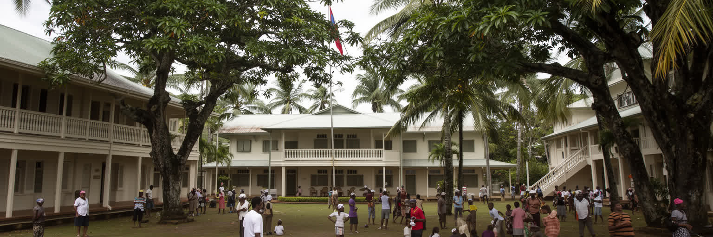
ポートビラの歴史には、メラネシアの土地に外から来た商人、宣教師、植民地行政、戦時の軍事拠点、独立運動が重なります。かつてのニューヘブリディーズは英仏共同統治という特異な制度の下に置かれ、学校、法律、行政、言語、宗教の系統が二重に走りました。その痕跡は、英語と仏語の教育、教会、通りの記憶、行政文化に残ります。独立後、ポートビラは小さな植民地行政の町から、主権国家バヌアツの首都へ変わりました。国会や官庁は、単なる建物ではなく、島々の多様な言語と土地制度を一つの国家として調整する場所です。歴史を読む時、白い植民地建築や戦時の痕跡だけでなく、土地を守り、自治を求め、独立後の制度を作った住民の経験を中心に置く必要があります。観光客に見える南国のゆったりした風景の下には、外部支配、労働移動、キリスト教化、土地権の争い、独立後の政治的な試行錯誤があります。ポートビラの首都性は、巨大な宮殿ではなく、多島国家の交渉を続ける小さな政治空間に表れます。戦時の滑走路や港の記憶も、外部勢力が島をどう見てきたかを示します。博物館や学校がこの歴史を扱うことで、若い世代は独立を現在の課題として学びます。英仏の制度を受け継ぎながら、ビスラマとカストムを通じて自分たちの国家を作り直す過程は、いまも行政、教育、裁判、土地の相談に続いています。独立の記憶は、日常の制度運営の中で生きています。
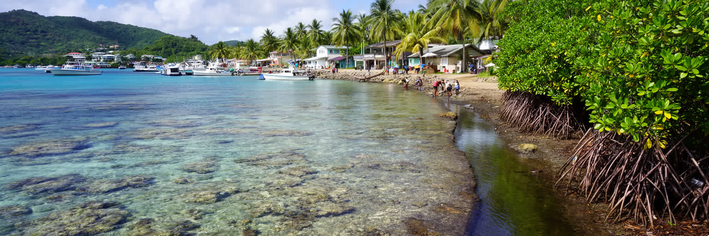
ポートビラの海は、観光資源である前に生活環境です。湾、礁、海岸、マングローブ、近くの島々は、漁業、遊び、航路、防波、信仰や記憶の場として使われてきました。ですが都市が成長すれば、排水、廃棄物、土砂流出、港湾活動、船の燃料、観光施設の開発が海へ影響を与えます。珊瑚礁や透明な水は旅行者を引きつけるが、見えにくい汚れや水温上昇は生態系をゆっくり弱らせます。市場や住宅地のごみ処理、道路の排水、斜面の伐採、建設現場の土砂管理は、海の状態と直接つながります。島国の首都では、環境政策は遠い自然保護ではなく、飲み水、食料、観光収入、災害からの守りに関わる都市政策です。ポートビラの湾を歩く時、沖の美しさだけでなく、陸から海へ流れ込むものを考える必要があります。海岸の公共空間を整え、住民が使える水辺を残し、観光施設に適切な処理を求めることは、都市の公平性にも関わります。気候変動による海面上昇や強い嵐は、低い海岸部と港湾施設をさらに脆くします。学校や地域団体の清掃活動は大切ですが、上流の排水計画が弱ければ努力は追いつかありません。観光船や小型ボートの係留も、珊瑚礁への影響を避ける管理が必要です。海岸利用のルールを共有することも欠かせません。海を守ることは、漁師や観光業者だけの課題ではありません。都市全体の排水、土地利用、消費の仕方が、湾の未来を決めます。
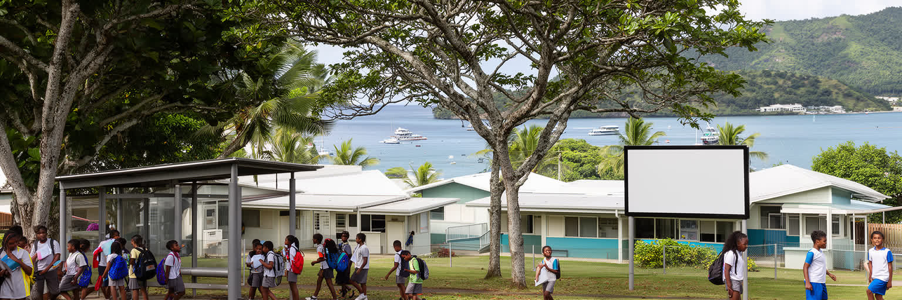
ポートビラには、学校、専門教育、大学機能、政府機関、民間企業、教会系の教育活動が集まり、地方の若者にとって進学や仕事を探す入口になります。多島国家では、学ぶために首都へ出ること自体が大きな移動であり、家族の仕送り、親族宅での同居、交通費、言語、都市生活への適応が学業を左右します。ビスラマ、英語、仏語、島ごとの言語が交わる教室では、単に知識を得るだけでなく、異なる島の人々と国家を共有する感覚を学びます。若者は観光、建設、小売、行政、情報通信、海外就労への道を探す一方、都市の賃金だけでは住宅や生活費を賄いにくいこともあります。失業や不安定な仕事は、家族関係や地域の安全にも影響します。ポートビラの未来は、若者が首都で技能を身につけ、島や村との関係を保ちながら、どのような仕事と公共生活を作れるかにかかっています。教育政策は校舎の数だけでなく、寮、奨学金、通学、インターネット、職業訓練、女性の安全、障害のある学生の支援まで含めて考える必要があります。文化や言語を失わずに専門技能を得られるかも、島国の教育では重要です。スポーツや音楽、教会青年会は、学校外の居場所としても機能します。首都に集まる若者の声を政治や都市計画が聞けるかどうかも重要です。若い世代が都市を離れるだけでなく、都市を変える担い手になれる時、ポートビラは小さくても強い首都になります。
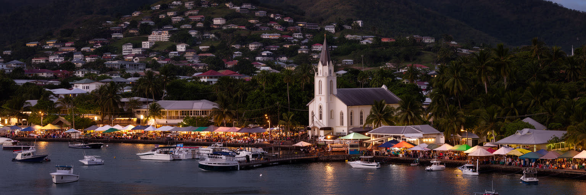
ポートビラは世界経済の大都市ではありませんが、都市の重要性を人口や高層ビルだけで測れないことを教えます。ここでは、天然港、国会、国際援助、観光、離島物流、中央市場、教会、カストム、土地権、防災、若者の移動が、歩けるほどの距離に圧縮されています。首都は国家の顔であると同時に、村から来た人が学び、働き、親族を支え、また島へ戻る通過点でもあります。観光のパンフレットでは、海、笑顔、リゾートが前面に出るが、実際の都市は水道、道路、住宅、学校、病院、港湾、廃棄物、災害復旧という地味な仕組みによって支えられています。ポートビラを読むことは、南太平洋の島国が外部世界と交渉しながら、自分たちの土地と文化をどう守り、同時に都市の現金経済をどう取り込むかを見ることです。小さな市場の売り場、ミニバスの行き先、教会の日曜礼拝、港の荷役、官庁の窓口、海辺の排水は、すべて一つの都市像につながります。脆弱性は弱さだけではなく、互いに支え合う制度を必要とする条件でもあります。だから、この都市を理解するには、観光客の短い時間と住民の長い責任を重ねて見る必要があります。国際会議や災害支援の場面では、小さな首都が広い海域の声を代弁します。ポートビラの価値は、巨大な集積ではなく、多島国家の複雑な関係を日々結び直す力にあります。湾を見下ろす小さな首都から、島々の未来が見えてきます。